| GS-Prüfzeichen Berufsgenossenschaftliche Prüfstelle: Fachausschuss „Elektrotechnik" | |
| Kennzeichen der Prüfstelle Verband Österreichischer Elektrotechniker (ÖVE) | |
| EG-Konformitätszeichen (CE-Zeichen) | |
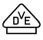 |
Kennzeichen der Prüfstelle Verband Deutscher Elektrotechniker (VDE) |
| VDE Harmonisierungskennzeichen für Kabel und Leitungen |
|
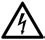 |
Gefährliche elektrische Spannung |
| Schutzisoliert (Schutzklasse II) | |
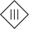 |
Schutzkleinspannung (Schutzklasse III) |
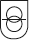 |
Sicherheitstransformator (Schutzklasse III) |
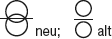 |
Trenntransformator |
| Tropfwassergeschützt | |
| Sprühwassergeschützt (Regenwassergeschützt) | |
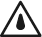 |
Spritzwassergeschützt |
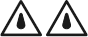 |
Strahlwassergeschützt |
| Wasserdicht | |
| Druckwasserdicht (mit Angabe der maximalen Eintauchtiefe) | |
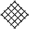 |
Staubgeschützt |
| Staubdicht | |
| Für rauen Betrieb | |
| Schutzleiteranschluss | |
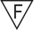 |
Leuchte für Entladungslampen zur direkten Montage auf oder an normal oder leicht entflammbaren Baustoffen |
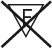 |
Nicht zur direkten Montage auf normal entflammbaren Oberflächen geeignete Leuchte (nur zur Montage auf nicht entflammbaren Oberflächen geeignet |
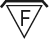 |
Zur Montage in oder auf normal entflammbaren Oberflächen geeignete Leuchte, falls Wärmedämm-Material die Leuchte umhüllt |
| Explosionsgeschützte, baumustergeprüfte Betriebsmittel | |
| Gleichstrom | |
| Wechselstrom | |
| Mischstrom | |
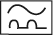 |
Pulsstromsensitiver Fi-Schutzschalter (Typ A) |
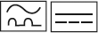 |
Allstromsensitiver Fi-Schutzschalter (Typ B) |
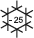 |
FI-Schutzschalter zum Einsatz bei tiefen Temperaturen |